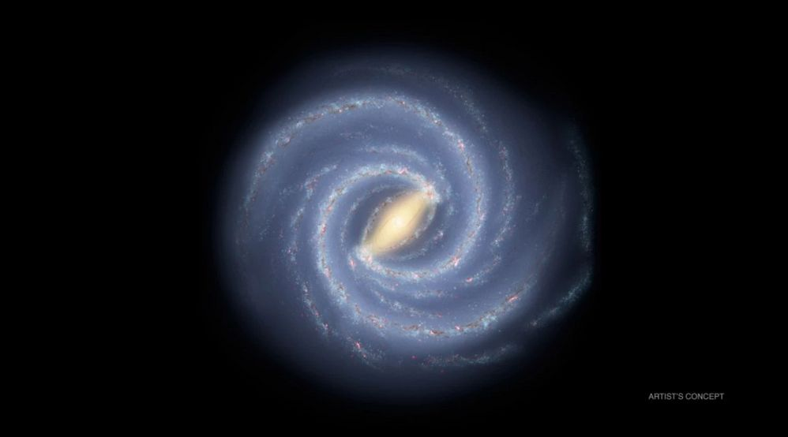
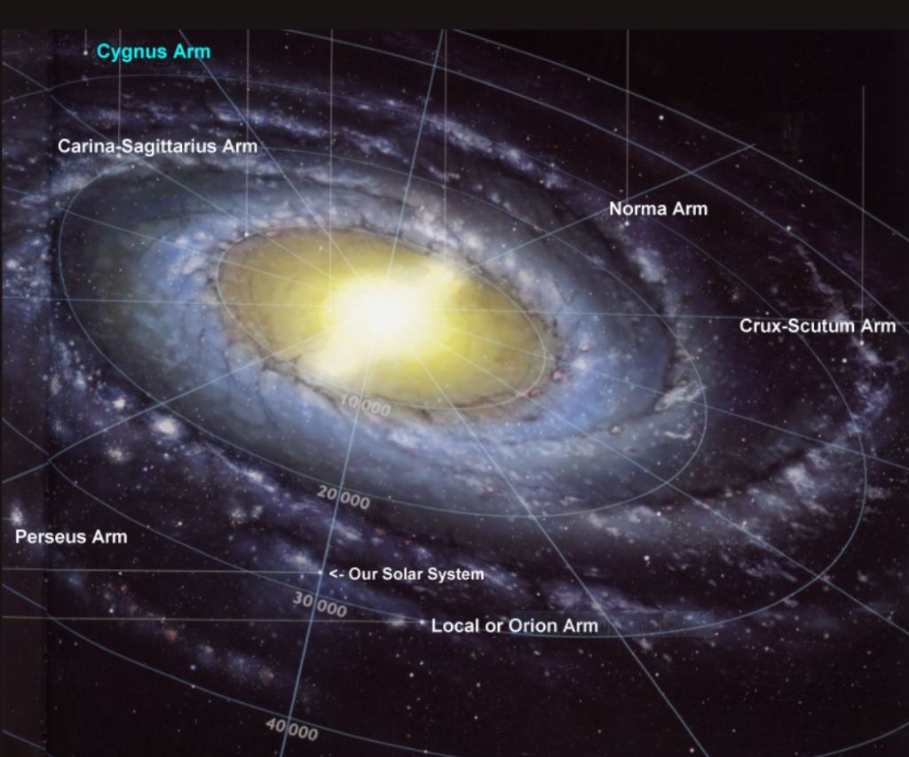
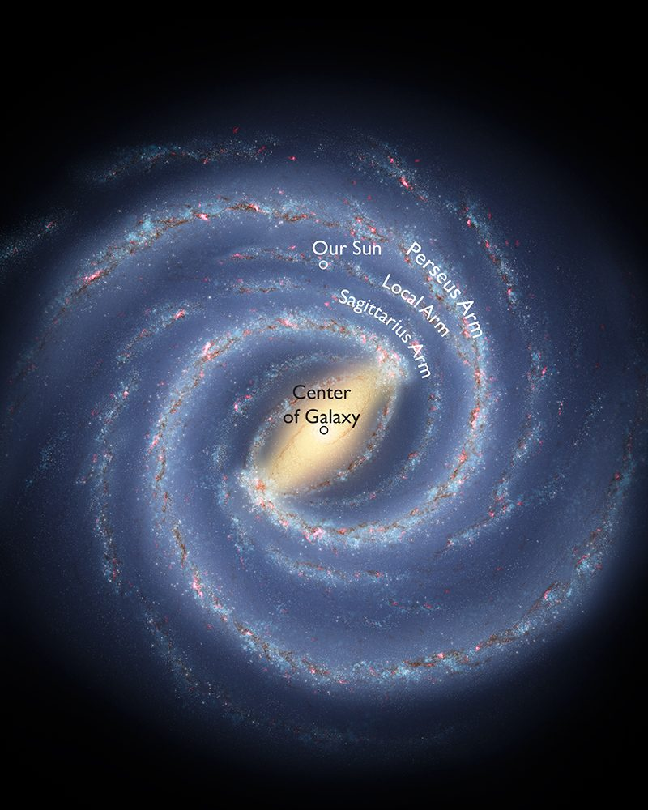
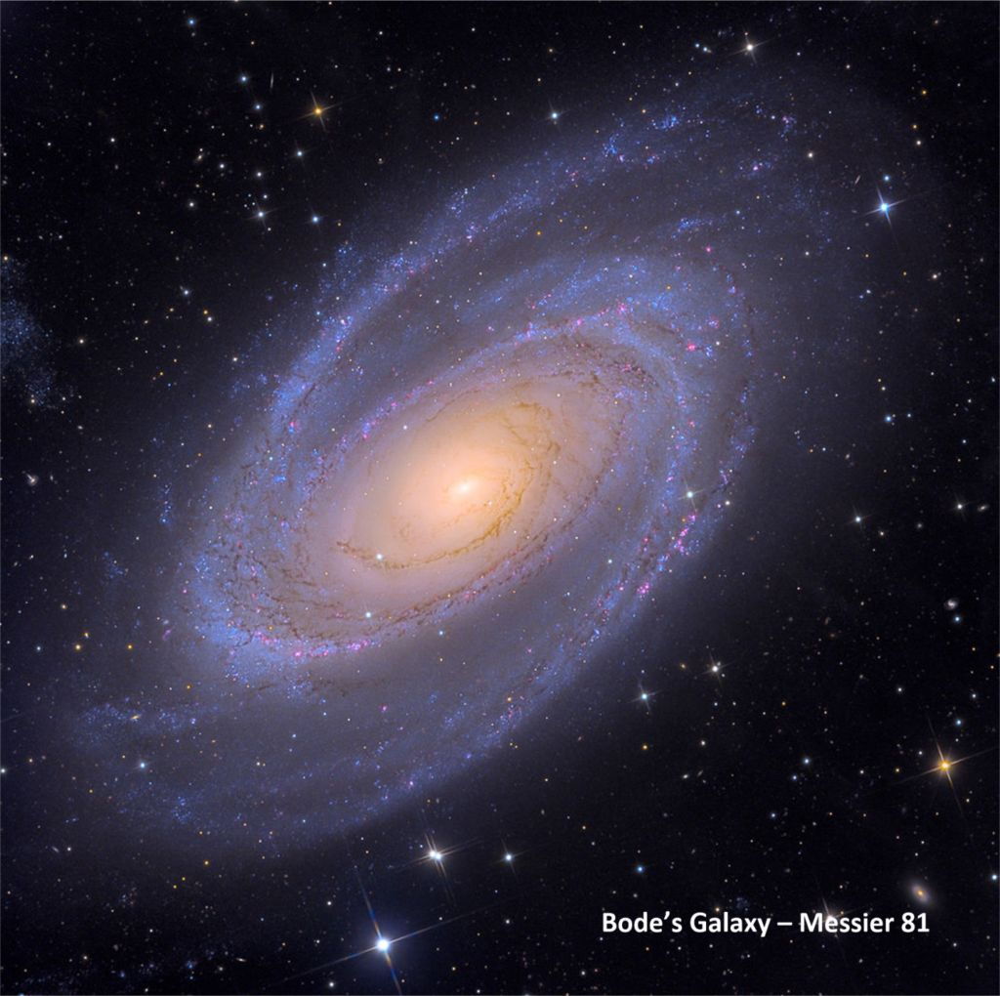
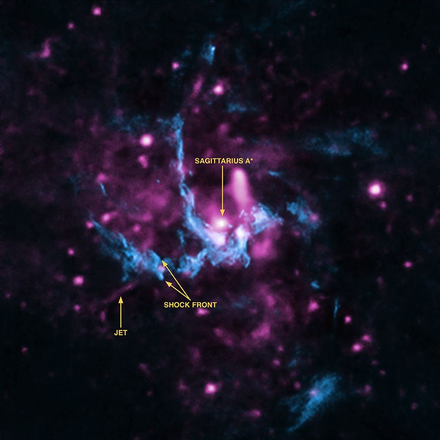
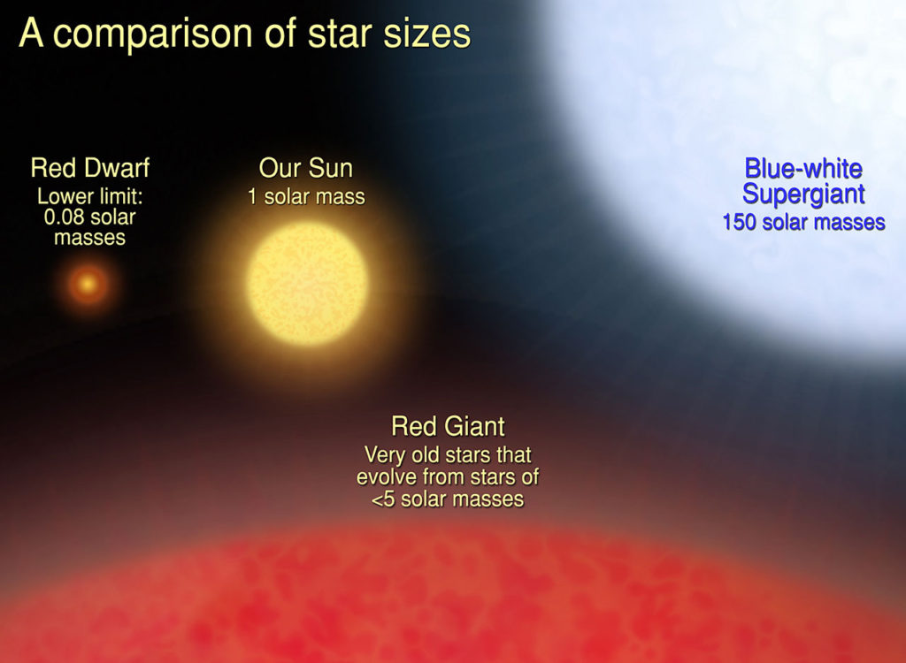
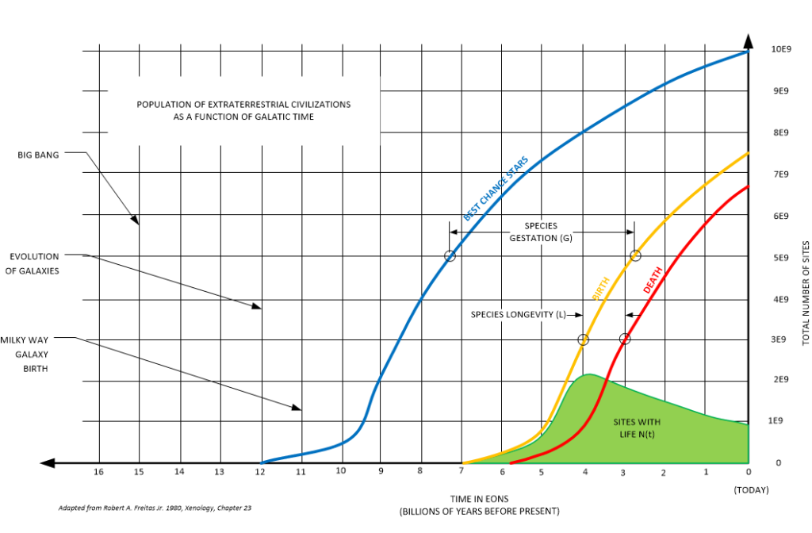
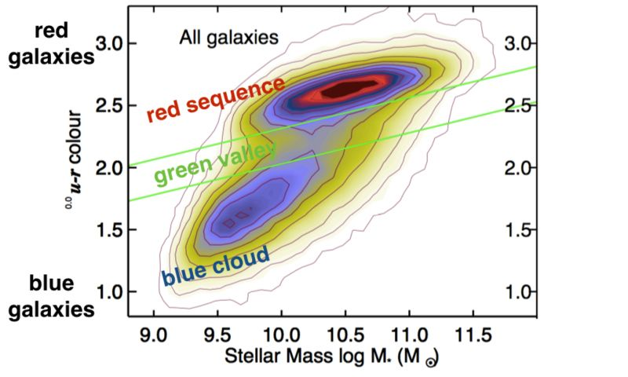

Our solar system is but one small place within a much larger (physical) community. This community is our galaxy, also known as the “Milky Way” galaxy. Here in this post, I place what I know of our galaxy and mix in what has been presented to me through MAJestic. It is a hodge-podge of conventional science and the outrageous. All together it paints a rather comprehensive general picture of the history of our galaxy…
“Our sun is one of 100 billion stars in our galaxy. Our galaxy is one of billions of galaxies populating the universe. It would be the height of presumption to think that we are the only living things in that enormous immensity.” -Wernher von Braun, Text of the Address by von Braun Before the Publishers' Group Meeting, The New York Times Text of the Address by von Braun Before the Publishers' Group Meeting Here 29 April 1960 L. 20, column 2 Wells (April 29, 1960), l. 20, column 2. (This is a dated comment, as the galaxy is now known to be more than 7 times as large.)
Many readers, no doubt, have no idea what a galaxy is, and thus need to know why it is so important to me.
Duh! What is a “galaxy”?
Before we begin, I must repeat a core principle to the reader; There is an “invisible world” that is part of our lives. This “invisible world” goes by many names; heaven, dark matter, MWI, to name just a few. What I describe here is the barest edge of what we know to be the reality in our physical world. I discuss the physical reality of this universe centered around our tiny planet.
For many people the word “galaxy” conjures up the same kind of meaning as does a “star”; they are both objects from outer space. When I first started to write about my experiences, I came to confront a harsh reality. It surprised me. Indeed, it still surprises me. People, for the most part, are ignorant of science. It is true.
Most people are totally ignorant of science.
Sadly, not everyone understands the terms and phrases that I use so routinely.
While I have tried to “dumb down” my writings to the most basic level, I am sure that there will be individuals who will still fail to grasp what I am trying to convey. No; this is not an elementary text on astronomy. But, in my own way, I wish to make the complex simple and easier to understand in the context of the world that I experienced.
Where we live
We live on a planet called earth that is in orbit about a star that we call the sun.
A star is a hot collection of gas and light that (seems to) sits apart in the vast universe that we live in. A star can get pretty darn big. Our sun is a star. Contemporaneously, it is considered to be an “average” star. It’s not too big, and not too small. It’s just about right (for us).
However, other species do NOT consider it to be “average”. They consider it to be a little on the “hot” side. In their minds, the most common stars are much cooler and smaller than our sun. They like to think that it is the cooler “K” and “M” class stars that are “average” and “common”.
Our sun and earth is part of a neighborhood that consists of other planets also orbiting the sun. We call this a solar system.
For our purposes, EVERY star has a solar system.
Yay, now maybe some of those solar systems might only consist of some dust and an asteroid or two, while others might consist of a complex and dense collection of all sorts of planets. The point is that we can make the broad assumption that each star has its own solar system of orbiting planets.
A Galaxy
A galaxy is a collection of stars that are bound together by gravity.
Galaxies come in different sizes and shapes. Depending on the history of the galaxy, it can look like a huge fuzzy mass, or a spinning top and anything in between. Our galaxy is also average. It is a little on the “big” side comparatively, and spins around forming a shape and features known as “arms”.

Our sun resides within “our” galaxy. We call it the “Milky Way” galaxy because (I suspect) it looks like a splash of milk in the night-time sky.
We live in the Milky Way Galaxy.
We are not in the center of it, nor are we off on the outer edges. Our sun (and solar system) lie in a pretty average and typical section. Our surrounding neighborhood contains both young and old stellar neighbors. As is true with most of the universe, most of the stars that surround us lie hidden. We cannot see them. Those stars that we do see are actually just the big and bright stars only. The vast bulk of stars around us are small and quite dim.
The vast bulk of stars around us are small and quite dim.
The Size of our Galaxy
“How did it communicate? I have no idea. It did move its arms a lot. Almost like giving instructions! I heard no voice communications. The helmet was not as large as our two NASA astronauts, and had a viewport to look forward. It had a small, perhaps a communication device, attached only to the right side of the helmet! I saw no oxygen tank(s). It had a wide belt like wrapping around it.. It did not appear to be tethered as the two Astronauts were to the sides of the shuttle structure. I observed nothing that appeared to be a weapon. The time of this amazing scene was one minute and seven seconds, I timed it on my Astronaut chronograph watch.” -Clark C. McClelland, a former ScO of the Space Shuttle Fleet commenting on a scene he witnessed. He claims he personally observed an 8 to 9 foot tall extraterrestrial (ET) on his monitor while on duty in the Kennedy Space Center’s Launch Control Center (LCC). He claims that the ET was standing upright in the Space Shuttle Payload Bay having a discussion with two tethered US NASA Astronauts. He also claims to have observed (on his monitors) the spacecraft of the ET as it was stabilized safely in orbit to the rear of the Space Shuttle main engine pods.
Let’s talk about the “Milky Way” galaxy.
Stars do not lie alone in the great vastness of space. They are not scattered about like grains of sand on a beach. They clump together. They gather in groups. They collect together.
These collections are called galaxies.
Our galaxy, the Milky Way, contains maybe 600 to 750 billion stars (plus or minus 250 billion) that lie mostly in a semi-flattened (with wavy planar ripples) spiral disk of some 70-100,000 light-years (ly) across, with a central bulge of about 10,000 ly in diameter.
I said, “Our galaxy, the Milky Way, contains maybe 600 to 750 billion stars”. This is debatable. There are those whom still hold to the 1960-era belief that there are only 100 billion stars in the galaxy. Others, through ignorance (perhaps), subscribe to the 1985-era belief that there are 400 billion stars in the galaxy. While still others maintain the more conventional belief (1995-era) that there are no more than 600 billion stars in the galaxy. If you consider the T and Y class dwarves to be stellar bodies then the number could well exceed 1000 billion stars. This is a 2015 era belief.
Also…
I said, “spiral disk of some 70-100,000 light-years (ly) across”. Apparently, our galaxy is pretty much on the larger side of my estimate. The size was upgraded in the March 10, 2015 edition of the Astrophysical Journal. This brings the Milky Way's size up to that of Andromeda. The Milky Way's small radius in comparison to Andromeda's larger radius has always puzzled astronomers because the two galaxies have roughly the same mass.
I can see the nerds in the reader audience nodding. However, the galaxies as portrayed in fictional software games are not a true representation of the actual size of a galaxy. For instance, the game stellaris (at most) might have a galaxy of a mere two thousand solar systems. 2000 is not 750,000,000,000.
(I would guess that the game limitations are due to the computer technology, as well as the general interest of the player. Afterall, a boy starting the game would end up as an old man before he would even begin to consider finishing it.)
Anyways…
Our Location in The Galaxy
“The number of habitable worlds in our galaxy is certainly in the tens of billions, minimum, and we haven’t even talked about the moons. And the number of galaxies we can see, other than our own, is about 100 billion.” – Seth Shostak, Senior Astronomer at California’s SETI Institute
Our sun; Sol, lies less than halfway out (26,000 ly) from the galactic center in Sagittarius. It resides on the core-ward side of one of the galaxy’s spiral arms named Orion. This “arm” is some 2,000 to 3,000 ly thick.
There are numerous arms in our galaxy. (This figure seems to change, as scientists can’t seem to make up their minds between the major and minor arms.) As of 2017, it is considered that there are four “major” arms in our galaxy.

Roughly 6,000 light-years separate “our” Orion arm from the Sagittarius-Carina arm on the inside (towards the center of the galaxy) and the Perseus arm on the outside (outer rim of the galaxy). From our perspective, the galactic rim is in the direction of Auriga and Taurus.
Do not be deceived. The space between these arms is NOT empty of stars. They are full of stars. It is only that the vast bulk of the stars are the dimmer dwarfs that give off scant light that it appears that the voids are empty. The “arms” are composed of more hot and bright stars than what is found in the spaces between them.

Our sun, Sol, is located 67 light-years north of the galactic plane. We are not in the middle; in the thick of the galaxy disk. We lie above it. We lie within a roughly 200-light-year wide oval band that is rich in gas, dust, and newborn stars.
In this region are associations of extremely bright, bluish, and massive O and B stars, with emission nebulae (H II). These are the (bright) stars that we see at night.
All those stars that we see at night are not typical. They just happen to be the stars that are easiest for us to see. Some are big. Some are bight. Some are visible because they are nearby to us. Often, these are the very young stars that people claim to be the home for extraterrestrial species. Heads up; they are not. They simply glow and light up the night sky for us. They are what we see. They are what give our galaxy the shape that we perceive. They are what help us define the “spiral arms”.
Voids between the Spiral Arms
The apparent voids between spiral arms are not empty space. They are not empty at all. It certainly looks like it, but that is because we are unable to see the dimmer stars. In truth, the “voids” of nothingness between the spiral arms are actually “chock” full of dimmer, redder, and less massive stars like Sol. (G, K, and M class.) Not to mention the huge numbers of “brown dwarf” stars and their respective solar systems.
The truth is that these voids are where the BULK of intelligent extraterrestrial species come from. This is where the more advanced civilizations in our galaxy exist. They do not lie inside the (visible) arms; where the young and hot stars lie, and where the gaseous and dusty spaces proliferate. No. They tend to lie in the safe, unexciting, and relatively quiescent spaces between the arms.

The Milky Way has two four (x4) major and two (x2) minor arms that spiral out from the long bar of stars, as well as near and far arms that lie along both sides of the central bar more. There are also some “trivial” galactic features that could be classified as “offshoots” of the arms. These are distributed throughout the galaxy.
To some, the naming of these various features is important. Yet the truth is that the stars group together in clusters of various sizes, shapes, and intensity of brightness. How we view these clusters defines our naming conventions.
Some Notes; A 12-year study published in the Monthly Notices of the Royal Astronomical Society has confirmed that our Milky Way Galaxy has four spiral arms, following years of debate that it has only two arms. First there were four arms, then there were two major arms with two minor arms, now we are back to four major arms again! Jeeze! Here’s a good write up on all the arguments. "Using NASA's infrared Spitzer Space Telescope to sample light from some 30 million stars in the Milky Way, astronomers observed a long bar of relatively old stars spanning the center of the galaxy. Stellar bars are known to exist in some other spirals, and researchers have long pondered the possibility that one might reside in ours. They were unsure, however, of whether the heart of the galaxy would contain a bar structure, an ellipse or both. The new observations paint the clearest picture yet of the Milky Way's interior and reveal the apparent bar in unprecedented detail. The feature is some 27,000 light-years long (7,000 light-years longer than expected) and sits at a 45-degree angle to the galaxy's main plane."
The Center of the Galaxy
Looking in from a point outside the Milky Way, we would see the luminous parts of the galaxy; a dense concentration of mostly old stars that fill the central bulge. Whose brightest stars are generally [1] red giants of relatively low mass or [2] big bluish stars recently born from gas. In the center of our galaxy is a very interesting and complex structure known as Sagittarius A* that is probably a black hole massing about 2.5 million suns.

The central bulge is not a central point. It is not spherical in shape. Indeed, it is shaped like a long rectangular or oval bar. Its shape actually extends in the form of a 12-18,000 ly long “bar” (2-3 times longer than it is wide). From that, it “extends” to four bluish spiral arms on opposite sides. (Quite an unusual object, indeed.)
These “arms” wrap around the bulge and each other outwards through the dimmer and redder galactic disk. They possibly include broken arm segments; (these) yellowish arms where most short-lived OB stars have already perished and spurs off the arms (for example, the Orion Arm containing Sol, may actually be a spur that might have once been a part of the Perseus arm).
It is a dynamic and energetic place. With large streams of energy, vortexes of gravity, plasma, and other gasses interspersed the enormous stars and stellar debris of the region.
Galactic halo
Surrounding the Milky Way’s spiral disk and bulge is the slightly flattened feature known as the “galactic halo”. It extends far out and away from the galaxy. It acts like a large envelope that contains the entire galaxy and encompasses other stellar objects.
This halo consists of stars. It generally consists of very old stars, averaging somewhat lower in mass than our sun. (G, K, M and brown dwarfs for the most part.)

Within the galactic halo is a relatively small number of individual stars and about 200 or so globular clusters. A globular cluster is a spherical collection of stars. They tend to clump together and orbit the galactic core as a satellite “mass”. Globular clusters are very tightly bound by gravity, which gives them their spherical shapes and relatively high stellar densities toward their centers. These clusters are spread evenly about the halo; roughly half above and half below the disk. The reader can think of them as dense warts on an imperfect face.
These densely packed groups of stars may make excellent cradles for complex space-traveling life to evolve. However, we do not know this to be the case. We can only hypostatize.
My belief is that life springs up throughout the universe quite easily.
Di Stefano presented his research at the 227th meeting of the American Astronomical Society. His key point was that globular clusters are massive groupings of millions of stars in a region only 100 light-years across. The clusters date back to the early life of the Milky Way (nearly 10 billion years ago). (For comparison, the universe is approximately 13.5 to 15 billion years old.) Although these clusters' age raises some questions, it also provides ample time for civilizations that emerged to evolve and become complex. In this case, the older age of the stars is an advantage. Di Stefano and Ray noted that bright stars like the sun would have been born, lived and died, leaving behind only faint, long-lived dwarf stars. These dimmer stars would require planets to orbit closer to their sun in order to maintain liquid water on their surface — a key requirement for the evolution of life as we know it. Their close orbits could help shield them from interactions with passing stars, according to a statement from the Harvard-Smithsonian Center for Astrophysics (CfA).
The reader should recognize that there are studies that claim that these environments may be too harsh for life. In all cases, there are studies that say one thing and studies that say the opposite. The truth, like everything else, lies somewhere in between both extremes.
“If I were to suggest that between the Earth and Mars there is a china teapot revolving about the sun in an elliptical orbit, nobody would be able to disprove my assertion provided I were careful to add that the teapot is too small to be revealed even by our most powerful telescopes. But if I were to go on to say that, since my assertion cannot be disproved, it is an intolerable presumption on the part of human reason to doubt it, I should rightly be thought to be talking nonsense. If, however, the existence of such a teapot were affirmed in ancient books, taught as the sacred truth every Sunday, and instilled into the minds of children at school, hesitation to believe in its existence would become a mark of eccentricity and entitle the doubter to the attentions of the psychiatrist in an enlightened age or of the Inquisitor in an earlier time.” ― Bertrand Russell
The Ripples or Grooves in our Galaxy
There are ring-like structures of stars wrapping around the Milky Way’s outer disk. These structures appear to belong to the disk itself. As a result, instead of the galactic disc being a thin “structure”, it is much larger than that. We now know that the disk is about 60 percent larger than what we had previously thought.
Not only do the results extend the size of the Milky Way, they also reveal a rippling pattern. This is a very unique feature. As such, it raises some really intriguing questions about what actually sent wavelike fluctuations rippling through the disk.

The researchers who discovered this feature suggest that the likely culprit was a dwarf galaxy. They have suggested a theory that the dwarf galaxy might have plunged through the Milky Way’s center long ago, sparking the rippling patterns astronomers have now detected. It would be similar to the waves on a lake or pond when you toss a pebble into it.
Other Structures
There are other structures that are associated with our galaxy. They too are quite interesting. One of which is the Monoceros Ring.

We know about these features due to the work of Yan Xu. Xu is an astronomer at the National Astronomical Observatories of China. Xu, colleague Newberg, and other colleagues studied the problem of a group of stars beyond the disk’s outermost edge. (The so-called Monoceros Ring.) They used data from the Sloan Digital Sky Survey to determine the actual shape and behavior of this structure.
They found four (4x) total structures in and just outside what is currently considered the Milky Way’s outer disk. The third structure was the Monoceros ring, and the fourth structure was the Triangulum Andromeda Stream, located 70,000 light-years from the galactic center.
All four structures alternated with respect to the disk. They went from above it, to below it, to above it, to below it. Newberg, who was in the tidal stream camp, was surprised that the ring and three other structures were actually a part of an oscillating disk.
I really love stuff like this. It’s really great to read about and consider the wonders of our universe.
The hidden reality of our galaxy
Our luminous galaxy, because of the Galactic Halo, appears to be embedded in a larger and much more massive, but unseen, spheroidal halo of mostly non-luminous (or low luminosity) material (Brown dwarves, planets, gas giants, planetoids, asteroids and other mysterious bodies that we have not yet been exposed to.).
As described previously, this halo extends the physical dimensions of our physical galaxy substantially. The Milky Way may actually contain as much as the mass of a trillion suns like Sol, although the 600 billion, estimated luminous stars mass only about 175 billion suns. Thus, most of the galaxy’s mass must be composed of “dark” matter, of which brown dwarfs, neutron stars, black holes, gas, and dust are estimated to make up only a minor share. The nature of the galaxy’s non-luminous matter is still unknown.
Stars of our Galaxy

Although as many as 5,800 to 8,000 of the Milky Way’s stars are visible from Earth with the naked eye, it is seldom possible to see more than 2,500 stars at any given time from any given spot. Most of the stars that we do see are not typical stars. Not at all. We cannot see “typical” stars.
Our eyesight, even with most telescopes are simply not good enough. Instead, what we see are the very rare, bright and young hot stars. All of which possess more mass, a higher luminosity, and a greater diameter than our own sun. While we might well (possibly) see them, they only represent a very tiny percentage of all the stars present to our eyesight.
We cannot see the bulk of the stars, the vast majority of stars in our local neighborhood are dimmer than our sun; too dim to be observed with the naked eye. Although dim and reddish M-dwarf stars constitute more than half of the population of our galaxy’s stars, none are visible to the naked eye. We just cannot see them.
In fact, it wasn’t up until the last decade or two that we “proved” that “brown dwarfs” actually existed. Up to that time, it was all just a theory. The statists strongly argued that “it doesn’t exist unless I can see it!“.
Physical Conclusions
Every day we are learning more and more about our galaxy and the space that lies around us. There will be many more discoveries and the science books are constantly being revised with the latest discoveries and theories.
When we meet and communicate with other species and other intelligences, and others that are extraterrestrial in nature, we discuss things from our point of understanding. That is very limiting because for the most part, not only do they see things differently than we do, but they have created sciences and technologies that are based on those understandings. They are alien to us.
For instance, a species that sees clearly in the infrared spectrum (apparently a common thing) see a different kind of sky at night. Their understanding of our galaxy is somewhat different than ours. For they see it in a far different way than we can.
The reader must understand, for a successful transfer of information and technology from one species to another, there has to be a uniformity of understandings and perceptions. Oh, forget that Hollywood bullshit about mathematics being the language of species communication. It isn’t. At least, that has been my experience.
We can only understand things within a common framework.
This limitation has been one of the problems that MAJestic has had with our extraterrestrial benefactors over the years. It is also why myself and a handful of others were tasked with our roles. So when information is presented herein, it is based upon an understanding of our “established” understandings with the presentation of new ideas and concepts that are alien to us.
With that being stated…
The History of our galaxy
Here is the “unwritten” actual history of our galaxy.
In many arguments concerning the Fermi Paradox, it is often discussed in terms of the physical universe. It always boils down to transport of one extraterrestrial species from one “home planet” to another “colonization planet”, and the relative probability of it occurring and being sustainable.
There are a myriad of arguments and discussions on this, and all of them are quite interesting.
I do not have the entire and whole story, and I am not even able to provide a sweeping overview. However, I can make a handful of statements that might give the reader some pause to consider. All of this involves only our galaxy alone. I know absolutely nothing about other galaxies. This information is tenuous. It does not involve the sheer totality of our universe.
So this is the complete catalog of what I know regarding our galaxy. I am sorry that it is so abbreviated, and perhaps a bit obtuse, but it is all I know about the galaxy that we live in. Please accept my apologies in this matter.
The Very Beginning
In general, the physical universe is around 13.7 billion years old.
Shortly afterward, gas, dust and other odd objects formed.
Their gravity would bring them in contact with other gas, dust, and odd objects. Eventually, they started to form primitive stars and collections of stars.
The earliest proto-galaxies formed rather early on, and they were huge in size. In fact, very large and very old galaxy clusters existed roughly 2.5 billion years after the “big bang”.
Some Notes; The age of the universe at 13.7 billion years is debatable. But why quibble about fractions of a billion years that occurred around 14 billion years ago, that is silly. For our purposes, lets just simply say that the universe is a nice round 14 billion years old. (Anyways, time isn’t what we think it is anyways.) “In physical cosmology, the age of the universe is the time elapsed since the Big Bang. The current measurement of the age of the universe is 13.799±0.021 billion years within the Lambda-CDM concordance model.”
Astronomers have found distant red galaxies—very massive and very old—in the universe when it was only 2.5 billion years post-Big Bang.
“Previous observations suggested that the universe at this age was home to young, small clumps of galaxies long before they merged into massive structures we see today. We are really amazed — these are the earliest, oldest galaxies found to date. Their existence was not predicted by theory and it pushes back the formation epoch of some of the most massive galaxies we see today." -Carnegie Observatories Ivo Labbé
These red galaxies are very interesting. Astronomers have been particularly surprised to find very old, red galaxies that had stopped forming new stars altogether. They had rapidly formed massive amounts of stars out of gas much earlier in the universe’s history, but then suddenly starved to death. This behavior has raised the question of what caused them to die so early. (Such “red and dead” galaxies may be the forefathers of some of the old and giant elliptical galaxies seen in the local universe today.)
In addition to the old “dead” galaxies long past star formation, there were other red, dusty galaxies still vigorously producing stars.
"We're detecting galaxies we never expected to find, having a wide range of properties we never expected to see." Apparently, the early universe was already a wildly complex place. It's becoming more and more clear that the young universe was a big zoo with animals of all sorts. There's as much variety in the early universe as we see around us today." -Carnegie Observatories Ivo Labbé Go HERE.
The Formation of Our Galaxy
No one really knows how OUR particular galaxy was formed.
Contemporaneously, there are debates on the age of our galaxy. In fact, there are those who claim that our galaxy is almost the same age as the “Big Bang”.
As of 21MAY18, the overall consensus is that the totality of our universe is about 13.7 billion years old. Contemporaneously, based on measurements of the element beryllium in two stars within a globular cluster of stars called NGC 6397, our Milky Way galaxy is considered to be one of the oldest galaxies in the universe. Using this dating method, those involved puts the age at 13.6 billion years.
Or, in other words almost the same age as the universe itself.
Now, this conclusion is based on the assumption that the globular cluster NGC 6397 formed at the same time that the entire Milky Way galaxy formed. It’s a pretty big assumption. It really is, as there is no indication that this is true.
This kind of assumption is like looking at an old man with a young girl and assuming that they are the same age because they sit in the same car together. I would kindly and respectfully suggest that further work needs to be done on this matter.
Now, there are other things and other evidence that also suggest that this is true. For instance, they have found very ancient stars at the very center of our galaxy.
So, is our galaxy really as old as the universe?
How our Proto-Milky Way Galaxy was Formed
I posit that the universe was created and afterward, various stars, globular clusters, and proto-galaxies formed. These proto-galaxies and stars moved about and interacted with each other. I contend that there was a period of around 3 to 4 billion years where the proto-galaxy of our Milky Way galaxy formed.
After the “Big Bang”, during a period of 3 to 4 billion years, numerous “objects” and items formed. They all became gravitationally attracted to each other. This collection of objects created the proto-galaxy that eventually became the Milky Way.
During this period, the first 4 billion years after the “Big Bang”, older stars interacted with the dust and material that eventually became our galaxy. Therefore, our galaxy is comprised of a number of proto-galaxies, older globular clusters, and some very old stars. Yet, the bulk of our galaxy started to form around 3 to 4 billion years after the “Big Bang”.
Our galaxy is typical; it is an aggregate of early formed stars, and clusters, gas and debris that formed in huge proto-galaxies, and collections of gas and debris that eventually formed the bulk of our galaxy as we know it today.
Our Galaxy – The early days
Our complete galaxy; the Milky Way galaxy, formed solidly about 5 billion years after the “Big Bang”. (With its proto-galaxy coming into existence around 3.5 billion years from the Big Bang. Say 1 to 1.5 billion years of formation.) In the early years it didn’t look anything like it does now, and even today, as then, it is constantly changing and evolving. Actually and truly; it is but a physical manifestation of the quantum world that surrounds us all.
What we are discussing is the earliest beginnings of our galaxy. There was no specific point in time where the galaxy came into being. Rather it formed through a coalescence of material into a collection of dust, debris, and stars. At some point, it became large enough to be called a galaxy. So for our purposes, let’s just say that the galaxy that we know it formed about 3.5 billion years after the “Big Bang”. Prior to that, it was something else; a proto-galaxy.
Let’s not quibble as to what constitutes a proto-galaxy and a mature; evolving one.
There have been approximately four generations of stars in the universe, (that is) if you discount the super-hot and short-lived stars, that are but transient events of insignificant duration. For our purposes, we can consider that our galaxy has had two complete generations of stars. (On average.) The very oldest stars in our galaxy are all that remains of the first generation.
A stellar generation is similar to that of a human generation. A star is born, grows and dies. That is the first generation. A second star is born out of the debris from the earlier star. It grows and dies. This is the second generation. A third star is born out of the dusty debris of the second star. It grows and dies. This is the third generation. Finally, a fourth star is born out of the debris from the third star. It grows and then eventually dies. This is the fourth generation.
Generations of stars were born, lived their stellar lives, and then faded into dim obscurity or died. The galaxy has been quite dynamic. (They move in orbits inside of a twirling and spinning galaxy. They flash into and out of existence. They form from collections of dust, and flash as radiation is released.) Stars form and die all the time.
When we look through our telescopes we see this dynamic interplay. Stars have a much longer lifespan than humans, so it appears that they never change. However, that is an illusion.
Galaxies Smash into Each Other Too
During the formation of our galaxy, and during the first of time, up to now, there was a rather serious change to our galaxy. Another much smaller galaxy; a dwarf galaxy, plunged headlong into our galaxy. It disrupted the tidy orbiting paths of the stars and altered the shape of our galaxy. Some stars from the dwarf galaxy were added to our galaxy, some of our stars were tossed out of our galaxy.
Given the huge distances involved, there probably were not too many stellar collisions. (We assume.) The galaxy just passed through ours, and the gravitational waves influenced the orbital structures of the galaxy.
First Intelligence’s
After the big bang, the physical world began to appear. This came in the form of proto-galaxies which included all sorts of planetary bodies.
The plain and straight fact is that the first quantum intelligence’s (non-physical) began to occupy the quantum sphere of the galaxy relatively early on; approximately in the first billion years of substantial galaxy formation (about 9 billion years ago). To be clear, intelligence formed long before physical bodies (containers) evolved.
Consciousness and intelligence formed long before physical bodies formed.
These life forms were with intelligence and understanding.
They created thoughts and formed quantum-level artifices, but they did not have physical forms. Our galaxy at that time was mostly somewhat an organized proto-galaxy with the very beginnings of physical organization. There were rocky planets, but most were too unstable to host any kind of physical life. The galaxy; and the universe at that time was emerging. It was nothing like we see it to be today.
Quantum level intelligence always precedes physical intelligence manifestation.
What the physical manifestation of our galaxy was, at this time, a large collection of gas and dust. With a rather lumpy composition containing regions of dense and not-so-dense gas in the vast spaces.
The life forms were all quantum-based intelligence’s and thoughts. Most manifested in simple forms of lattices and strange mixtures of garbons and unusual alignments of swales. There were no specific archetypes and no really strong and stable avenues of intelligent growth.
As a result, many intelligence’s came into being and then quickly morphed into other things. These were both good and bad. Neutral alignments were rare. It was a world of the strong and organized quanta taking over that of disorganization. But ultimately the chaotic environment began to stabilize and the first intelligence’s of organized thought began to manifest.
First Physical lifeforms
For our purposes and understandings; the vast bulk of physical life (as we understand it), however, did not begin to manifest until much later; around three billion years later (about 6 billion years ago) after the very first tentative formations of the galaxy.
This, of course, relates to the “organizational threshold” that must be reached in order to blossom uniformly through the galaxy.
Certainly, there were minor pockets of microbial life that were established in the earliest years of galaxy formation (Within the first billion years of planetary formation.) Nevertheless, for various reasons, these were anomalous and really did not contribute to the “organizational quantum threshold”. The truth be told, it manifested in pockets (Roughly associated quantum signatures with physical locations at various points.), scattered about relatively uniformly in the “halo” of the galaxy. This early life was microbial and had simple physical forms.
I urge the reader not to get too confused. When I refer to the “Halo” I mean a uniform distribution though out the galaxy which includes above and below the plane of the elliptic. There are stars out there in the nether regions; far removed from the well-known and dense “arms” of the galaxy. The life began to form in an even distribution pattern. It formed everywhere; not just in the plane and not just in the arms where the most active and energetic stars lay.
Over a period of one billion years, the life tended to grow in spurts throughout the galaxy. Some life would become extinguished as the planetary environment changed, while other life would grow through periodic planetary extinctions and yet still survive and adapt in the physical forms. Meanwhile, other life began to crop up and live starting at the smallest microbial stages.
The simple physical life represented the simplest of physical manifestations. Upon once a life took root on a given planet, it began to propagate and evolved, over time into other forms.
The evolution of life, on a given planet, was never clean and pristine. The various life forms needed to evolve. To do that, they required periodic planetary changes that ultimately caused the life forms to grow and adapt to change. It should be interesting to the reader to note that planetary global extinctions are common throughout the universe. The effect on life as observed on Earth should be considered to be atypical to general evolutionary trends. Please note that the extent of global planetary extinctions present in a given solar system is directly related to the size of the solar system.
If the star is large and hot, such as O, B, A and maybe F class stars, any rocky planets (and shepherding gas giants) will be plummeted by large asteroids and periodic bombardment. In fact, given the short lifetimes of these types of stars, the planetary bombardment will be rather (more or less) continuous during the solar system life.
If the star is a little cooler, there will still be planetary bombardment, but it will become less and less frequent over time. This would pertain to F and G stars. That is because the gravitational influence of the star is not as great, and the size of the solar system is not as large.
If the star is even cooler than that and thus smaller, there will also still be planetary bombardment, but it will be small in influence (relatively speaking) and like the F and G stars will become less and less frequent over time. This will pertain to K, and M class stars as well as Brown Dwarfs.
Complex solar systems involving binary, trinary and larger systems are much more complex. As such, the relationships between global periodic extinctions will vary and fall under complex formulas. It is beyond what I know at this time. I am sure that some intelligent scientist will one day come up with a set of rules and guidelines that would effectively delineate these complex relationships.
Bipedal Intelligent lifeforms
Within a billion years, about 5 billion years ago, bipedal intelligent life began to occupy a number of worlds. This was about one billion years before the very beginnings of our solar system.

However, there were no specific quantum archetypes and when these species began to develop the sciences and technologies necessitated by survival, they often caused quantum disruption and great chaos when they crossed the vast gulfs of space between the stars. This disruption became very serious; almost catastrophic, and needed to be curbed and culled. This was because entire civilizations were slowly being innocently entangled with different levels of quanta. They became confused and unstable.
It is not that simple. The term “levels” is a catchall phrase. It represents different types of disorganized quanta clumps. These non-stable garbons and associations are dimensionally unstable. When they confront other quantum arrangements the ones with the greatest quantum entropy gains mastery. This caused a great deal of consternation.
This was a chaotic period.
Various species advanced technologically and spread across the galaxy. They met other space-faring races and periods of confusing confrontation occurred. There really wasn’t much in terms of overt physical warfare (while some did actually occur), most of the problems had to do with incompatibility of various levels of quantum integration and thought manifestations. (Civilizations met and interacted, but the different quantum influences adversely affected the “weaker” or more “exposed” species. This eventually altered the physical world of both species. Typically it resulted in various catastrophic effects.)
It was a difficult time.
Inferior species without robust quantum configurations were easily overtaken by species with superior quantum organizations. The conflict happens outside of the physical and takes place over a generally short period of time. Over a few generations, the weaker lifeform tends to die off or be displaced.
I do not know the details. However, this period lasted around one billion years and ended about 4 billion years ago. This was about ½ billion years before the formation of our solar system. At that time, a number of (the strongest and most stable) organized species and races began to establish themselves in our galaxy. These races and species were all space-faring and very powerful. I believe that the progenitor race was one of these races.
The age of our solar system is under revision. Researchers studying bits of a meteorite discovered that the space rock was 4.5682 billion years old, predating previous estimates of the solar system's age by up to 1.9 million years.
Stabilization and Organization
At about three billion years ago, the galaxy was stabilized and set groups or organizations began to run it and control it. Over time they began to become more organized and better prepared to interact with each other. These organizations continue to this day. (Some mature, while others retire and evolve into other things…)
The area (of the galaxy) that we are in, has the form of a structured government, administered by a kind of federation (of sorts).
Each organization of races or species has established nurseries where they permit the cultivation and growth of “approved” and desirable quantum soul archetypes. We are in one of these nurseries.
The reader might be amused to know that there are five such nurseries in our general physical location. Thus, there are four other nurseries for sentience cultivation nearby. One of which is extremely close to us physically.
I believe that the established list of “approved” archetypes occurred around 1.5 billion years ago. The primary characteristic of this listing is to prevent one species from entirely disrupting another species because their (emerging) quantum soul is too prone towards disruption.
Key to the stability of a quantum configuration is a well-established sentience.
Since all quanta (in the species “Heaven”) are all interconnected, mixtures of different kinds of sentiences detract (take away from) the stability of the group quantum makeup. Uniformity of quantum configurations is desirable for stability of the sentience of the whole.
Now, every creature has a different soul. A dog has a soul. A cat has a soul. A tiger has a soul, and a three-eyed critter from Tralfamadore has a soul. Each soul is attuned to a unique “Heaven”, which is the “universe” in which it resides.
In “Heaven” is a uniformity of form. All human souls occupy a “human Heaven”. All cat souls reside within a “cat Heaven”, and so forth. However, each individual soul has an “awareness”. Thus, in a specific Heaven are different beings.
Each soul can create different consciousnesses within different realities to obtain experiences with. As long as the experiences build upon the overall “growth plan” of the soul, all is fine. However, when the experiences are disjointed, or irregular, discordant sentiences result. Discordant sentiences can terribly pollute and damage a given “Heaven” or quantum makeup of a species.
The key to prevent this from occurring is to create a “safe space” for a given species to grow within. This is a nursery from which a group of souls can acquire experiences and lessons.
Our Nursery
Our nursery is a relatively recent event and was established around 540 million years ago (more or less). The moon was relocated and put in orbit around the earth (As strange as it might seem, the purpose was to simulate the tidal effects that planets have that orbit smaller K and M class stars.) Additionally, specific native lifeforms were eliminated, while others were cultivated. Monitoring of the solar system began during this time. The exact periods of their involvement are unknown to me, but if I were to query our benefactors, I am sure that they would tell me.
My overall “feeling” is that there was a less than organized implementation of this nursery and that the primary “observers” had a greater latitude in their behavior (early on) than what we experience with them today.
The nursery was established by a group that I prefer to refer to as the “Progenitors”. It is monitored and observed by a different species. That species works directly with MAJestic in the policing of this nursery.
Ken D. Olum has some thoughts…
Ken D. Olum, using some inflation-based ideas and the anthropic premise that we should be typical among all intelligent observers in the Universe, arrives at the puzzling conclusion that “we should find ourselves in a large civilization (of galactic size) where most observers should be, while in fact we do not“.
In this note, he discusses the intriguing possibility whether we could be in fact immersed in a large civilization without being aware of it.
This is pretty much in line with what is being provided herein. The basic conclusion is that this possibility cannot be ruled out provided two conditions are met. These conditions are [1] that we call the Subanthropic Principle and [2] the Undetectability Conjecture.
- The Subanthropic Principle states that we are not typical among the intelligent observers from the Universe. Typical civilizations of typical galaxies would be hundreds of thousands, or millions, of years more evolved than ours and, consequently, typical intelligent observers would be orders of magnitude more intelligent than us.
- The Undetectability Conjecture states that, generically, all advanced civilizations camouflage their planets for security reasons, so that no signal of civilization can be detected by external observers, who would only obtain distorted data for dissuasion purposes.
Dispatch from our nursery will not be permitted until our sentience is established. Otherwise, our discordant-sentience could escape our quarantine and disrupt the rest of the galaxy much like a plague.
The Progenitor species will not permit humans to leave the nursey until our sentience is homogenious amoungist the bulk of humanity. Then, our souls will be reconfigured into a galatically approved archetype that would best fit our sentience.
Graduation
The reader must realize that we will never be permitted to leave this nursery until we, as a species, have mastered our ability to control and mitigate our quantum selves and souls. Therefore, we are an intermediary stage in evolution. Progression off-world means that we must either [1] cultivate a “service-to-others” sentience, or [2] devolve into a “farmed” sentience such as dictated as “service-to-self” entities.
That is the “battleground” that humans are fighting today. (The reader should not confuse the periodic “turnings” of social human behavior with quantum sentience.) The sentience that wins will determine the future direction of the human species.
Signposts for Service-For-Self Sentience
When this happens, there will be some telltale signs that will appear that will indicate a kind of foreboding as to what will transpire. [1] Firstly, humans will start to alter or “improve” their DNA and genetic structure. [2] First, in secret, and then publicly, there will become genetic stratification of human types.
There will be Indian-style caste systems put in place and defined by genetic manipulation. The lower castes would be genetically bred for certain functions, while the upper castes would have other genetic attributes incorporated to make them more “superior”.
[3] Laws will be put in place to control the behaviors of different castes of people. [4] Finally, once the service-to-self caste system is well entrenched, the entire human population will be absorbed by a more advanced service-to-self sentience, and all humans will find their genetic makeup altered over time to become a “farmed” sentience.
Age of our galaxy
The Milky Way appears to be poised to enter middle age.
While many younger galaxies can be grouped into “blue galaxies”, older galaxies can be grouped into “red galaxies”. Recent observations using infrared wavelengths indicate that the Milky Way appears to be of an intermediate color, which means that it can be grouped into relatively rare “green valley” galaxies.
- Blue Galaxies – This name applies because their vigorous star formation at this stage of evolution produces many young stars that are massive, bright, and bluish. Thus, the galaxy appears to be very blush in color.
- Red Galaxies – Here, the galaxy is dominated by the longer-lived red stars. The short-lived, bluish stars have expired to leave the redder, dimmer, less massive stars behind.
These types of galaxies are thought to be changing from blue to red as star-formation waning over 1.5 billion years (based on model simulations). If observations and model simulations are correct, star formation in the Milky Way will end within five billion years.
This will occur despite the gas compression and star formation impact of a predicted merger with the neighboring Andromeda Galaxy (M31). That event is anticipated to initiate beginning in 2.2 billion years and taking five billion years to fully assimilate. The Andromeda galaxy also appears to be transitioning into a green valley galaxy that is relatively poor in the cold gas needed for star formation.

My Conclusions
“There are objects in our atmosphere which are technically miles in advance of anything we can deploy, that we have no means of stopping them coming here . . [and] there is a serious possibility that we are being visiting and have been visited for many years by people from outer space, from other civilizations. . . . This should be the subject of rigorous scientific investigation and not the subject of ‘rubbishing’ by tabloid newspapers.” – Lord Admiral Hill-Norton, Former Chief of Defense Staff, 5 Star Admiral of the Royal Navy, Chairman of the NATO Military Committee
The reader might be surprised at my conclusions. But, given what I do know, our galaxy is simply teeming with all kinds of intelligent life in all kinds of shapes and sizes. It is full of life; life at every stage of development. This goes from the earliest and simple microbes to highly advanced civilizations that are millions of years old. And, at that those are only the physical creatures, I didn’t even begin to mention the great diversity of (invisible) quantum creatures that are about and surround us.
We should not at all be surprised to know that there are well way over a million intelligent extraterrestrial species in our galaxy.
Truthfully, if the reader could “get inside my head” and know what I know, experience what I have experienced, and been exposed to what I have seen, they would be surprised. Not at all the wonderment of nature and the capabilities of technology, but rather at how silly the arguments are that we humans are “alone” in this universe.
They are just so silly and trivial.
In fact, the galaxy that surrounds us is not a wild, empty and untamed wasteland just ripe for exploration and colonization. But, rather, it is a well patrolled and policed manicured world of great color and complexity. Not to mention dangers and pitfalls. Humans are fortunate to live in this protected nursery that we call the earth. We humans do not understand so much, what is necessary in regards to our universe. Were we to leave it, in our infantile state, we risk serious conflagration of our soul makeup. We are so ignorant, that we don’t even have an inkling of our ignorance.We need this protection. We need to understand the reality of ourselves and how we fit in the universe.
Take Aways
- Our galaxy is typical in the universe.
- Our galaxy is roughly around 9 billion years old in a universe that is approximately 14 billion years old.
- Consciousness and sentience in our universe occurred prior to the formation of the physical reality that we observe.
- The physical manifestation of intelligence in our galaxy began around 9 billion years ago. This was at the start of the formation of the Milky Way galaxy.
- First biological creatures began to inhabit our galaxy around 6 billion years ago.
- During a time period lasting approximately 2 to 4 billion years ago, there was a restructuring of sentience during a competition period for sentience domination.
- Our solar system was formed around 4.5 billion years ago.
- The galaxy stabilized with sentience standardization protocols and established archetypes starting around 1.5 billion years ago.
- About 1 billion years ago, a system of approved sentience archetypes was established, and a policing / enforcement group was established in support of it.
- Native life began to evolve and populate the world around 600 million years ago.
- The solar system that we live in was established as a sentience nursery around 540 million years ago.
- Numerous sentience’s have been cultivated within this nursery. Humans are the latest biological creatures to be so cultivated.
RFH
I am open to updates on the latest theories and information regarding our galaxy. As with everything else, what I understand is based on what I know. I welcome comments and suggestions to better help flush out the past in our galaxy.
FAQ
Q: What type of galaxy is the Milky Way Galaxy?
A: The Milky Way galaxy considered to be a “barred spiral galaxy“, as such it resembles the Hubble classification type “Sbc“. This is how the galaxy looks at this point in time. In the past, the Milky Way galaxy looked quite different. Galaxies change their shape over time.
Q: How big is the Milky Way galaxy?
A: Yah. It’s pretty darn big. It’s huge. In fact, scientists are just falling over themselves in amazement as to how big it is. The galactic disc is at least 150,000 light-years across. As time moves forward, we find ourselves constantly revising the size of our galaxy ever larger.
Q: How old is the Milky Way galaxy?
A: As of 21MAY18, the over consensus is that the overall universe is about 13.7 billion years old. Contemporaneously, based on measurements of the element beryllium in two stars within a globular cluster of stars called NGC 6397, our Milky Way galaxy is considered to be one of the oldest galaxies in the universe. Using this dating method, those involved put the age at 13.6 billion years. Or, in other words almost the same age as the universe itself.
I contend that elements within our galaxy is as old as the universe, but most of the galaxy did not come into being until around three to four billion years later.
Q: What do you know about Roswell?
A: It is a town in New Mexico. There is all kind of lore regarding that area. Some people claim that an extraterrestrial vehicle crashed there and that it has been “covered up” by the United States government. Hogwash! Nothing is ever covered up by the United States government, why we have the open and most transparent president in the history of the world; Barrack Obama telling us that there are no extraterrestrials. You can believe him, right?
Q: Why is sentience important?
A: Our universe is controlled by thought. Sentience funnels and directs thoughts. Unless the sentience is policed, great disruptions to the fabric of our universe can occur. Thus it is critically important that humans have a unified sentience, and eventual genetic reprogramming to a approved archetype.
MAJestic Related Posts – Training
These are posts and articles that revolve around how I was recruited for MAJestic and my training. Also discussed is the nature of secret programs. I really do not know why the organization was kept so secret. It really wasn’t because of any kind of military concern, and the technologies were way too involved for any kind of information transfer. The only conclusion that I can come to is that we were obligated to maintain secrecy at the behalf of our extraterrestrial benefactors.


MAJestic Related Posts – Our Universe
These particular posts are concerned about the universe that we are all part of. Being entangled as I was, and involved in the crazy things that I was, I was given some insight. This insight wasn’t anything super special. Rather it offered me perception along with advantage. Here, I try to impart some of that knowledge through discussion.
Enjoy.


MAJestic Related Posts – World-Line Travel
These posts are related to “reality slides”. Other more common terms are “world-line travel”, or the MWI. What people fail to grasp is that when a person has the ability to slide into a different reality (pass into a different world-line), they are able to “touch” Heaven to some extent. Here are posts that cover this topic.


John Titor Related Posts
Another person, collectively known by the identity of “John Titor” claimed to utilize world-line (MWI egress) travel to collect artifacts from the past. He is an interesting subject to discuss. Here we have multiple posts in this regard.
They are;